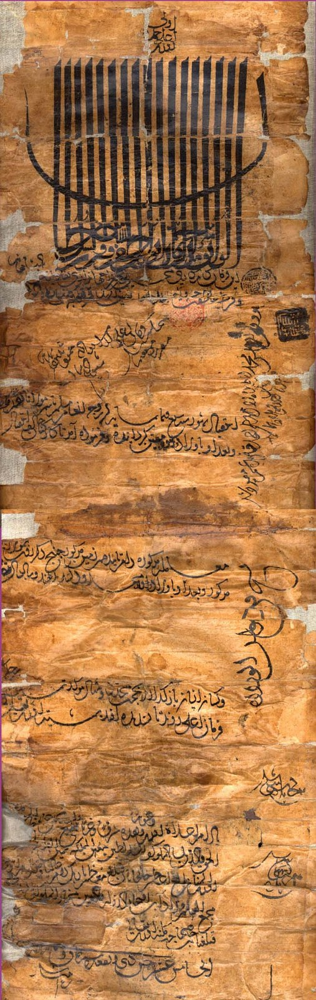

Firuz Shah Bahmani
Taj-ud-din Firuz Shah, sultan from 1397 to 1422, opened the Bahmani court to Persian talent, built Firuzabad on the Bhima and, by Firishta’s account, married a Vijayanagara princess.

Taj-ud-din Firuz Shah took the Bahmani throne at Gulbarga on 16 November 1397, after a year in which two boy sultans had been deposed and blinded, and ruled until 22 September 1422, when his brother Ahmad forced him to abdicate; he died on 1 October and was buried in the Haft Gumbaz outside Gulbarga. He fought Vijayanagara three times, in 1398, 1406 and 1417 to 1420, winning the first two and losing the third at Pangal, where disease and Deva Raya I’s relief army destroyed his force.
The chronicles make him the most cultivated of the Gulbarga sultans. Firishta records that he sent ships each year from Goa and Dabhol to the Persian Gulf to bring back scholars, soldiers and craftsmen, and that he spoke several languages, Kannada and Telugu among them, and kept wives from many countries. He is credited with beginning an observatory near Daulatabad, left unfinished at his death, and he built a new walled city, Firuzabad, on the Bhima south of Gulbarga, whose ruins survive. After the war of 1406 the tradition says Deva Raya I gave him a daughter in marriage and the ceded town of Bankapur as her dowry; the story appears in Firishta and has no inscriptional confirmation, though such alliances were not unusual. In 1400 he welcomed the Chishti saint Gesudaraz, a refugee from Timur’s sack of Delhi, to Gulbarga; their relations later soured, and the saint backed Ahmad for the succession.
Firuz’s reign fixed the Bahmani state’s outward orientation. The Persian Gulf recruitment that he regularised created the class of ‘Westerners’, the afaqis, whose quarrel with the Deccan-born nobility would dominate Bahmani politics for the rest of the century. His defeat at Pangal and his brother’s succession also ended the Gulbarga period; Ahmad Shah moved the court to Bidar within a decade.
In the story
Firuz Shah embodies the collection’s claim that Deccan sovereignty was made of imported and local parts at once. He ruled a Deccani state through Persians recruited by sea, fought Vijayanagara and married into it, and patronised a Sufi who then unseated him in favour of his brother. His reign is where the Bahmani court acquired the cosmopolitan character, and the internal fault line, that the five successor sultanates inherited and that later Mughal and Maratha newcomers would exploit.
In the chronology
- r. 1397–1422Firuz Shah Bahmani rules; the Chishti saint Muhammad Gisu Daraz (Gesudaraz) settles at Gulbarga after 1400.